library(ggplot2)Graphics Tutorial
Download the RMarkdown file for this tutorial here
Introduction to Data Visualization in R
The Typical Introduction to RStudio
Below you see a picture of the RStudio GUI.

The GUI provides several useful features, each of which is provided below.

Basic Tips for using R
- R is command-line driven.
- R is case sensitive.
- Commands in R are also called functions.
- The up arrow (^) on your keyboard can be used to bring up previous commands that you’ve typed in the R console.
- The $ symbol is used to select a particular column within the table (e.g., table$column).
- Your code can be commented using a # which tells R to ignore any text that occurs after that symbol.
Working Directories
Relative file paths make it easier if you move the folder containing your script(s) around. Or, if you share it with someone else, they will have little issue getting your code to work on their own file system. Therefore, before you begin working in R, you should set your working directory (a folder to hold all of your project files).
Using RStudio this can be done in a number of different ways:
- From the Main menu >> Session >> Set Working Directory >>.
- From the “Files” tab [on the right] click More >> Set As Working Directory (to use the current location of the “Files” tab as your working directory)
- Type the following code into the console after the “>”: setwd(“Path to Directory”)
- If you are using a PC this will look like this: setwd(“C:/Users/gbarboza/Path to Directory”)
- If you are using Windows this will look like this: setwd(“/Users/gbarboza/Path to Directory”)
Note
The way R reads the path is by use of the forward slash not the backslash.
RStudio Projects (.Rproj files)

You can create new projects from existing or new directories with “New Project…”. When you click “Open Project…”, your working directory is automatically set to the .Rproj file’s location. Any projects you have created/used recently will show up in the “Project List”
Data Management in RStudio
Importing Data
There are a couple of ways to import data into RStudio. You can import data from the Enviornment tab as shown below.
Of you can use the command line to import data. The easiest way to import data is to use the read.csv function. This function comes with your version of R, so you don’t have to worry about installing it.
For this example we are using data from the Urban Institute’s Open Data Portal. We are going to be working with data on the economic impact of COVID-19. Click here to download the data.
There are two ways to access the data. One is to download it and the other is to open it directly from their website. Note that if you access it directly from their website, the data are automatically updated when the website is updated.
The first thing we are going to do is visualize the data. Let’s take a look at the data.
This part of the tutorial introduces you to data visualization using ggplot. Open the data in the data viewer by clicking on it in the Data window or by typing View(my_data) in the console. Let’s visualize the data. R has multiple ways to graph data, but ggplot is among the best. The package ggplot does not come with your R program. Therefore, you have to install it before you can use it. To install ggplot, from the File menu go to Tools >> install packages and type in ggplot2 as shown below:

Installing the package is not enough, your code has to make reference to the package you want to use. In order to reference a package, you point R to the library as follows:
Hint: if you run code and you get an error message “there is no package called xxx” then you need to first install it, then run the library command again.
Let’s use our first graph to answer a question: is there a relationship between the total number of low income jobs lost by residents of a particular tract and the total number of workers who live in that tract.
Here is a link to the industry codes. They are also shown below:
 We will use two variables: X000 as our y variable and total_li_workers_employed as our x variable.
We will use two variables: X000 as our y variable and total_li_workers_employed as our x variable.
ggplot(data = my_data) + geom_point(mapping = aes(x = total_li_workers_employed, y = X000))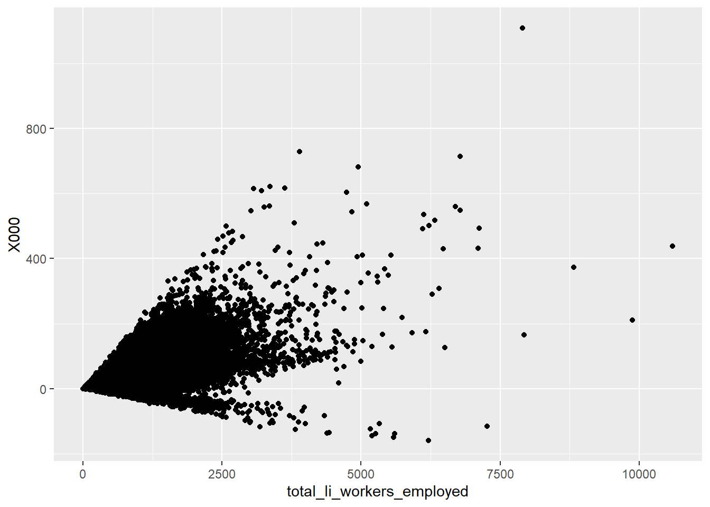
This plot shows the relationship we expected however it’s not so interesting. Let’s instead see if there is a relationship between jobs lost in educational services and jobs lost in retail trade.
We see that X15,Educational Services and X07,Retail Trade. Now make the plot.
ggplot(data = my_data) + geom_point(mapping = aes(x = X15, y = X07))
Let’s add some lables to the graph to be more descriptive.
ggplot(data = my_data) +
geom_point(mapping = aes(x = X15, y = X07)) +
xlab("Educational Services") + ylab("Retail Trade") +
ggtitle("Relationship Between Jobs Lost to COVID-19 by Industry Type")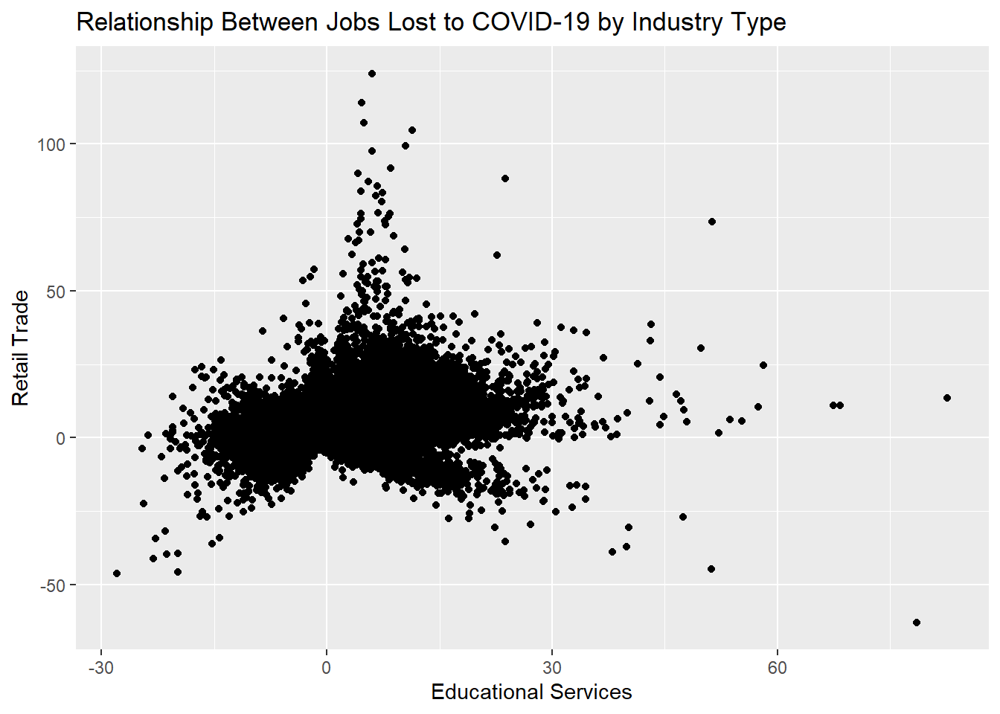
Aesthetic Mapping
We can add a third variable, such as “state”, to a two-dimensional scatterplot by mapping it to an aesthetic. An aesthetic is a visual property of the objects in your plot. Aesthetics include things like the size, the shape, or the color of your points. You can display a point in different ways by changing the values of its aesthetic properties as shown below. Below we will convey additional information about the data by mapping the aesthetics in the plot to the variable “state” in the data. We will do this by mapping the colors of the points to the state variable to reveal each of the 50 states.
ggplot(data = my_data) +
geom_point(mapping = aes(x = X15, y = X07, color = state_name)) +
xlab("Educational Services") + ylab("Retail Trade") +
ggtitle("Relationship Between Jobs Lost to COVID-19 by Industry Type")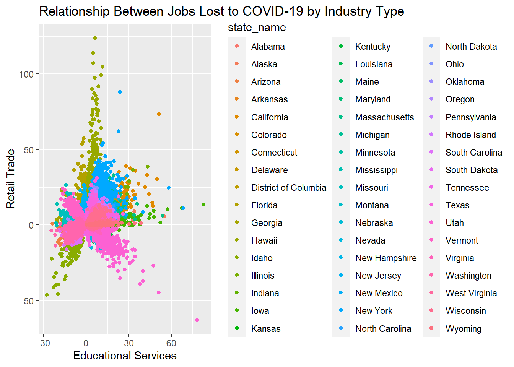
Clearly this is not a good way to visualize the data. So, lets take a smaller subset of the data and re-do the graph. Let’s compare Colorado, California, New York and Vermont.
Subsetting data is not difficult. Baseically, we are using SQL to select the variables (or values) we want. There are several ways to do this, for now, let’s use the subset command which comes with the basic R program (no need to load a library!). In R, the pipe operator (“|”) means “OR” and the “&” means “AND.”
#select only 4 states and 3 variables
newdata <- subset(my_data, state_name == "Colorado" |
state_name == "California"|
state_name == "Vermont"|
state_name == "New York",
select=c(state_name, X15, X07))
#Now let's redo the graph
ggplot(data = newdata) +
geom_point(mapping = aes(x = X15, y = X07, color = state_name)) +
xlab("Educational Services") +
ylab("Retail Trade") +
ggtitle("Relationship Between Jobs Lost to COVID-19 by Industry Type")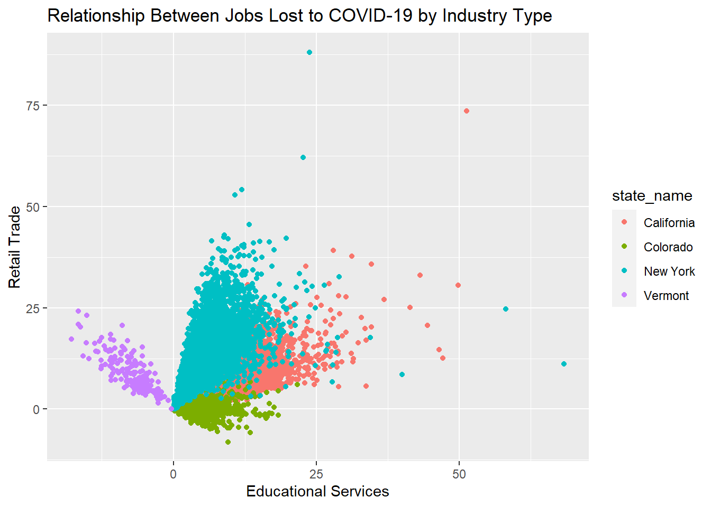
ggplot(data = newdata) +
geom_point(mapping = aes(x = X15, y = X07, shape = state_name)) +
xlab("Educational Services") + ylab("Retail Trade") +
ggtitle("Relationship Between Jobs Lost to COVID-19 by Industry Type")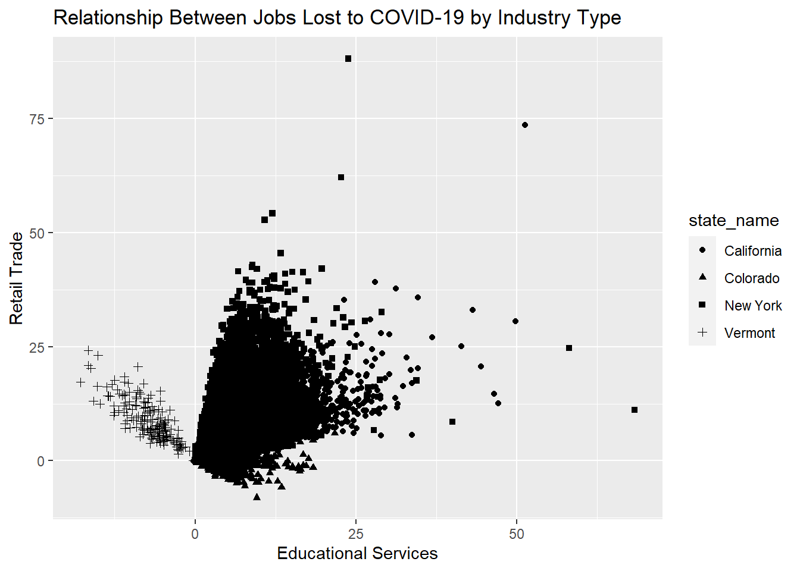
ggplot(data = newdata) +
geom_point(mapping = aes(x = X15, y = X07, shape = state_name, color = state_name)) +
xlab("Educational Services") + ylab("Retail Trade") +
ggtitle("Relationship Between Jobs Lost to COVID-19 by Industry Type")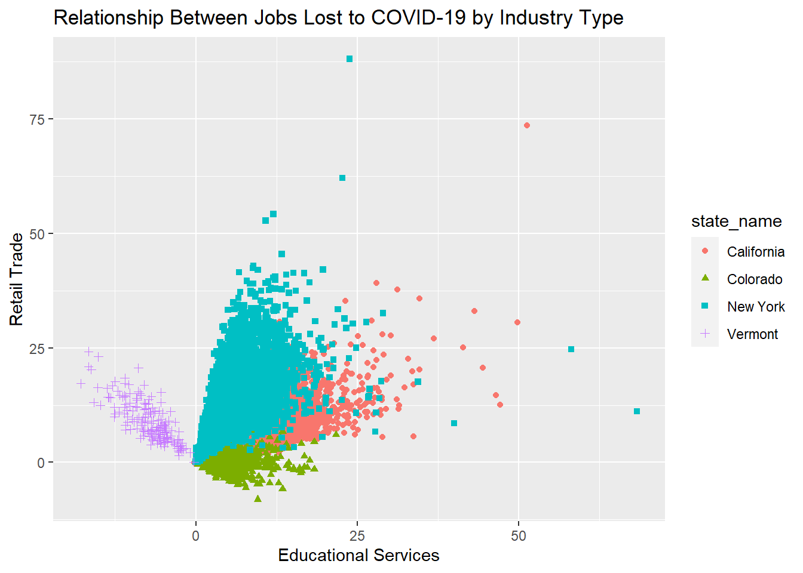
Facets
One way to add additional variables is with aesthetics. Another way, perhaps more useful with categorical variables, is to split the plot into facets, or subplots that each display one subset of the data. To facet your plot by a single variable, use facet_wrap and pass it a discrete data type, as follows:
ggplot(data = newdata) +
geom_point(mapping = aes(x = X15, y = X07)) +
xlab("Educational Services") + ylab("Retail Trade") +
ggtitle("Relationship Between Jobs Lost to COVID-19 by Industry Type") +
facet_wrap(~state_name)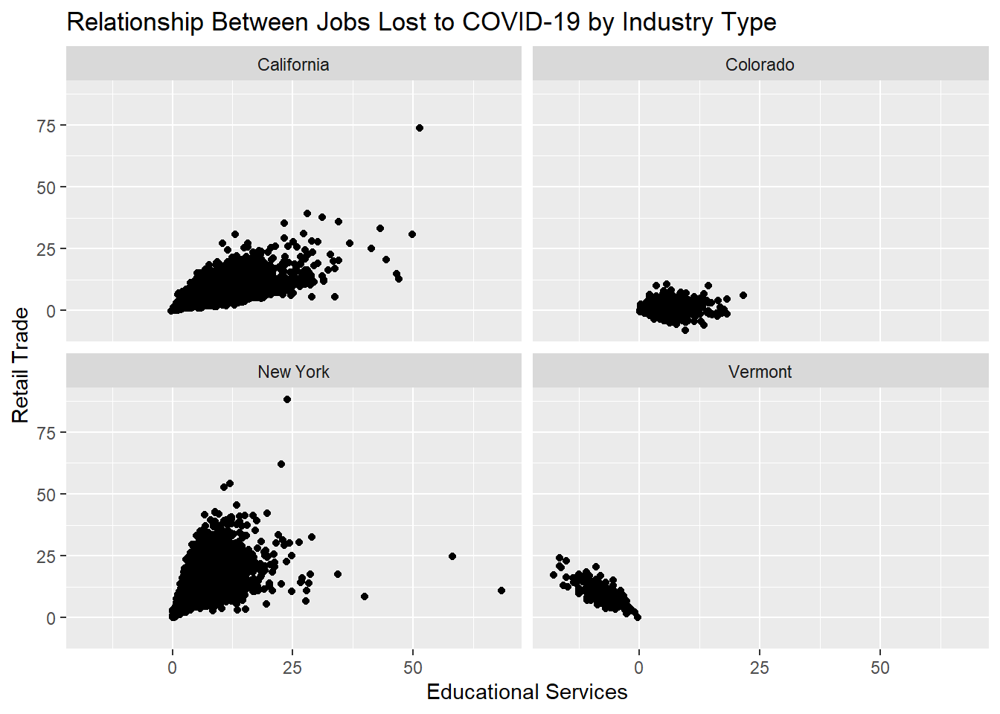
Exercise 1
- Using the COVID-19 data on job loss, visualize the relationship between “Arts, Entertainment, and Recreation” (Variable X17) and “Accomodation and Food Services” (Variable X18). The graphic should include only the following counties: El Paso County and Denver County both in the state of Colorado.
#Select the data you want to plot
ex1.data <- subset(my_data, state_name == "Colorado" &
county_name == "XXXXX" |
county_name == "XXXXX",
select=c(XXXXX, XXXXX, XXXXX))
#Make the plot
ggplot(data = ex1.data) +
geom_point(mapping = aes(x = XXXXX, y = XXXXX)) +
xlab("XXXXX") + ylab("XXXXX") +
ggtitle("Relationship Between Jobs Lost to COVID-19 by Industry Type") +
facet_wrap(~XXXXX)Try to fill in the XXXXX’s before looking at the answer below
Geometric Objects
A geom is the geometrical object that a plot uses to represent data. A plot is often described by its geom object. For example, bar charts use bar geoms, line charts use line geoms, etc. Let’s go back to the very first plot and modify it to be smoothed line instead of points. To do this, I willuse the geom object that creates a smoothed line: geom_smooth.
#Here is our original plot
ggplot(data = newdata) +
geom_point(mapping = aes(x = X15, y = X07)) +
xlab("Educational Services") +
ylab("Retail Trade") +
ggtitle("Relationship Between Jobs Lost to COVID-19 by Industry Type")
#Here is our geom smoothed plot
ggplot(data = newdata) +
geom_smooth(mapping = aes(x = X15, y = X07)) +
xlab("Educational Services") +
ylab("Retail Trade") +
ggtitle("Relationship Between Jobs Lost to COVID-19 by Industry Type")`geom_smooth()` using method = 'gam' and formula = 'y ~ s(x, bs = "cs")'
Next we will set the line type and color similar to what we did above with the geom_points. In order to create different line types for each state, all I have to do is use the linetype argument and assign it to the variable state_name.
ggplot(data = newdata) + geom_smooth(mapping = aes(x = X15, y = X07, linetype = state_name)) +
xlab("Educational Services") +
ylab("Retail Trade") +
ggtitle("Relationship Between Jobs Lost to COVID-19 by Industry Type")`geom_smooth()` using method = 'gam' and formula = 'y ~ s(x, bs = "cs")'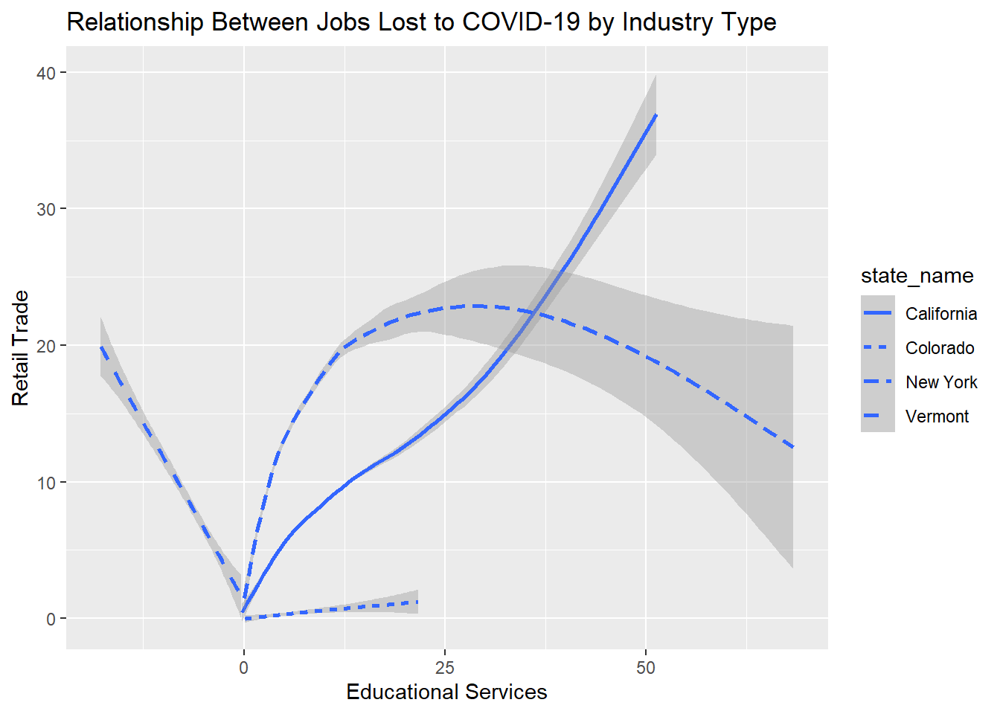
ggplot(data = newdata) +
geom_smooth(mapping = aes(x = X15, y = X07, linetype = state_name, color = state_name)) +
xlab("Educational Services") +
ylab("Retail Trade") +
ggtitle("Relationship Between Jobs Lost to COVID-19 by Industry Type")`geom_smooth()` using method = 'gam' and formula = 'y ~ s(x, bs = "cs")'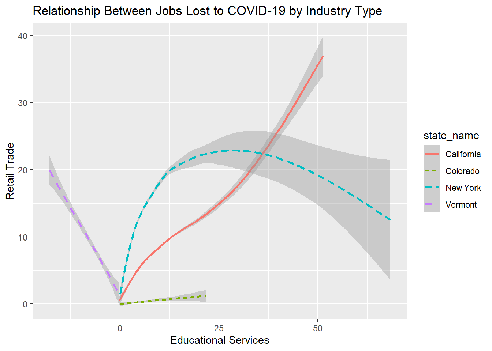
Finally, we can add the point data onto the chart by including the geom argument geom_point as another layer to our chart, as follows:
ggplot(data = newdata) +
geom_smooth(mapping = aes(x = X15, y = X07, linetype = state_name, color = state_name)) +
geom_point(mapping = aes(x = X15, y = X07, color = state_name)) +
xlab("Educational Services") +
ylab("Retail Trade") +
ggtitle("Relationship Between Jobs Lost to COVID-19 by Industry Type")`geom_smooth()` using method = 'gam' and formula = 'y ~ s(x, bs = "cs")'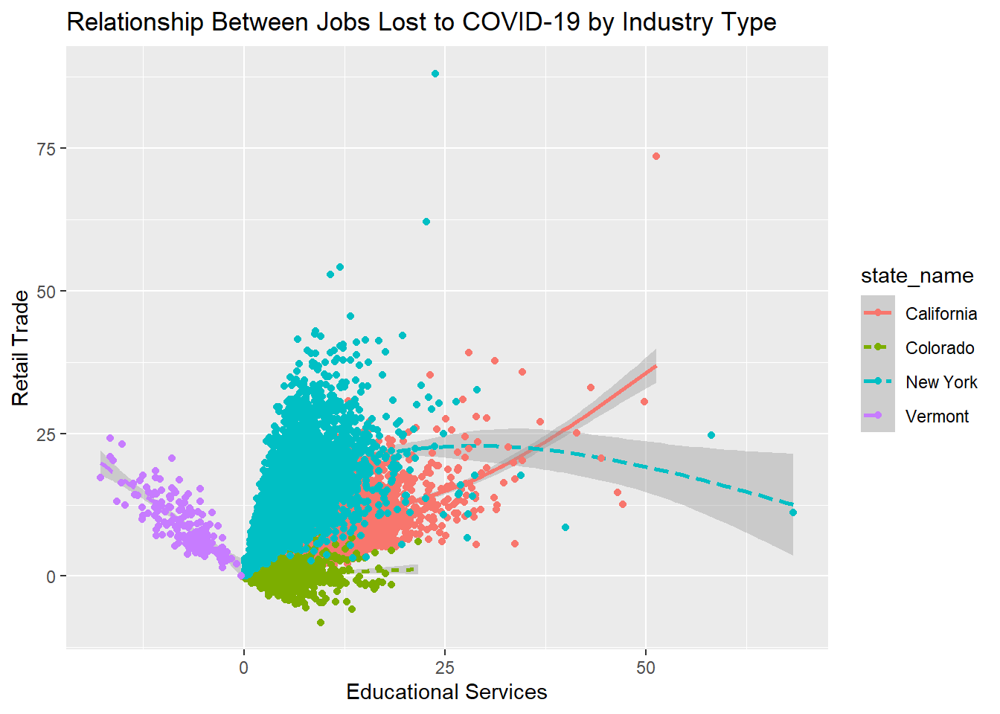
We might think this chart is too busy. Maybe the chart will look nicer if we eliminate some of the points. Let’s filter the data to only include points from two states: Colorado and Vermont.
A really important library called dplyr has a number of data manipulation commands that are quite elegant. If we use this library, we can filter the data from inside ggplot!
First, load the library dplyr that we installed above. Note, all we are doing below is adding a filter to the layer geom_point from inside the ggplot function. Everything else remains the same.
library(dplyr)
Attaching package: 'dplyr'The following objects are masked from 'package:stats':
filter, lagThe following objects are masked from 'package:base':
intersect, setdiff, setequal, unionggplot(data = newdata) +
geom_smooth(mapping = aes(x = X15, y = X07, linetype = state_name, color = state_name)) +
geom_point(data = filter(newdata, state_name == "Vermont" | state_name == "Colorado"), mapping = aes(x = X15, y = X07, color =
state_name)) +
xlab("Educational Services") +
ylab("Retail Trade") +
ggtitle("Relationship Between Jobs Lost to COVID-19 by Industry Type")`geom_smooth()` using method = 'gam' and formula = 'y ~ s(x, bs = "cs")'
Exercise 2
- Using the COVID-19 data you filtered in Exercise 1, make a line chart that visualizes the relationship between “Arts, Entertainment, and Recreation” (Variable X17) and “Accomodation and Food Services” (Variable X18). The lines of the chart should be of a different type and color corresponding to each county. Include a layer representing the points in the data.
#Select the data you want to plot
ggplot(data = ex1.data) +
geom_smooth(mapping = aes(x = , y = , XXXX = county_name, XXXX = )) +
geom_point(mapping = aes(x = , y = , color = )) +
xlab("Arts, Entertainment, and Recreation") +
ylab("Accomodation and Food Services") +
ggtitle("Relationship Between Jobs Lost to COVID-19 by Industry Type")Try to fill in the XXXXX’s before looking at the answer below
Exercise 1, Solution
ex1.data <- subset(my_data, state_name == "Colorado" &
county_name == "El Paso County" |
county_name == "Denver County",
select=c(county_name, X17, X18))
#Make the plot
ggplot(data = ex1.data) +
geom_point(mapping = aes(x = X17, y = X18)) +
xlab("Arts, Entertainment & Recreation") + ylab("Accomodation & Food Services") +
ggtitle("Relationship Between Jobs Lost to COVID-19 by Industry Type") +
facet_wrap(~county_name)
Exercise 2, Solution
ggplot(data = ex1.data) +
geom_smooth(mapping = aes(x = X17, y = X18, linetype = county_name, color = county_name)) +
geom_point(mapping = aes(x = X17, y = X18, color = county_name)) +
xlab("Arts, Entertainment, and Recreation") +
ylab("Accomodation and Food Services") +
ggtitle("Relationship Between Jobs Lost to COVID-19 by Industry Type")`geom_smooth()` using method = 'loess' and formula = 'y ~ x'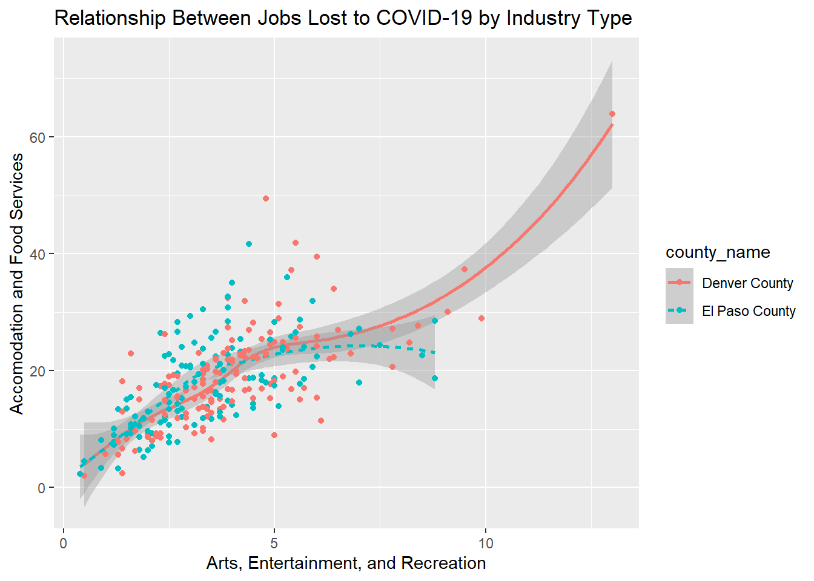